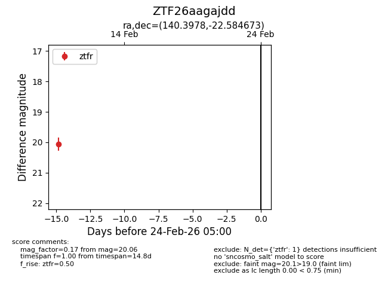
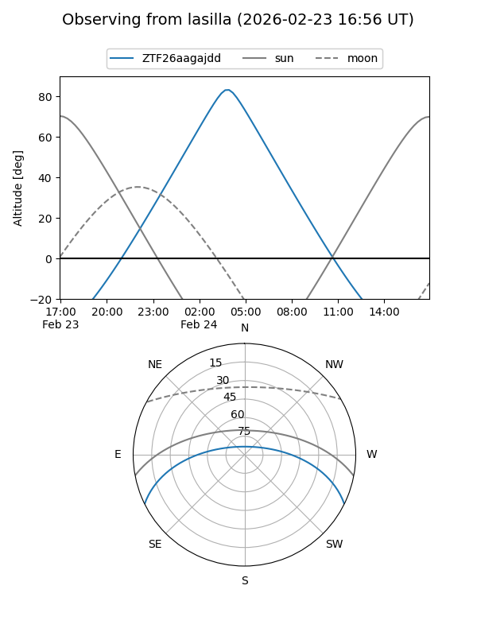
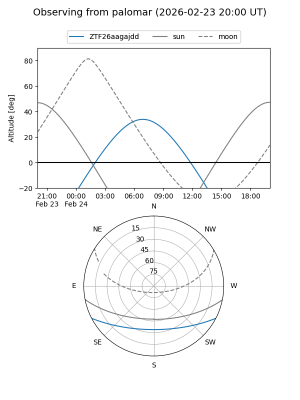

ZTF26aagajdd
Target ZTF26aagajdd at 2026-02-24 09:08
Aliases and brokers:
FINK: link
Lasair: link
ALeRCE: link
alt names
ZTF26aagajdd (ztf,fink_ztf)
Coordinates:
equatorial (ra, dec) = 140.3978,-22.58467
equatorial (HMS+DMS) = 09:21:35.47,-22:35:04.82
galactic (l, b) = (252.1884,+18.99938)
Flags:
Photometry:
last ztfr=20.06
1 ztfr detections
Lightcurve

Visibility


Additional plots